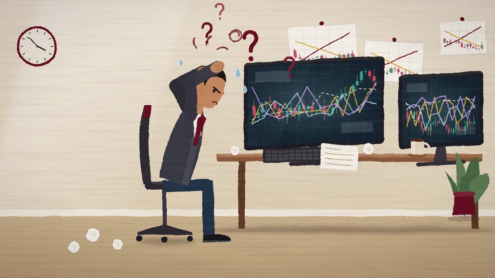
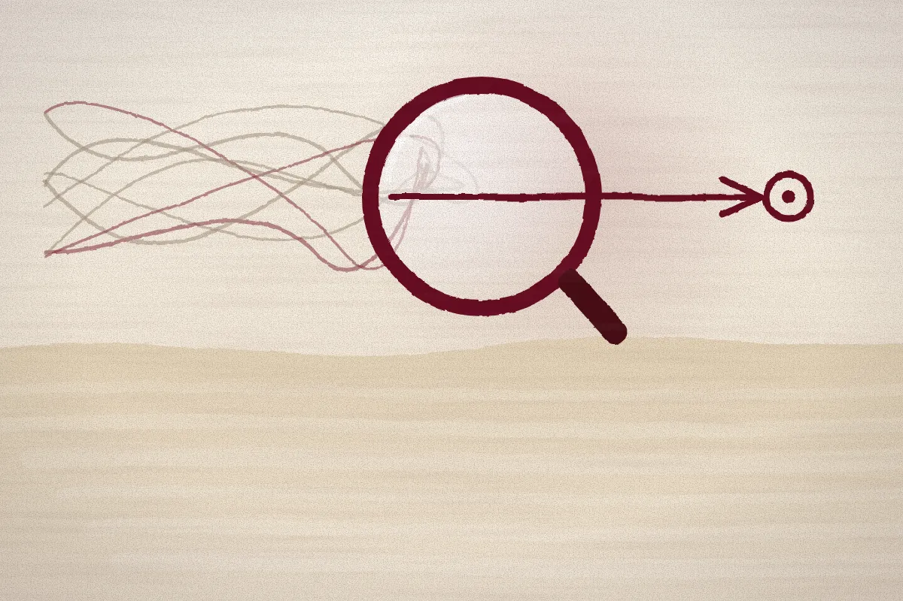
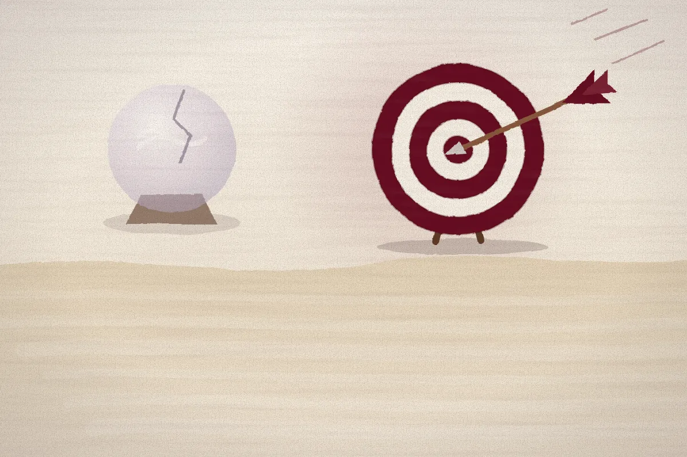
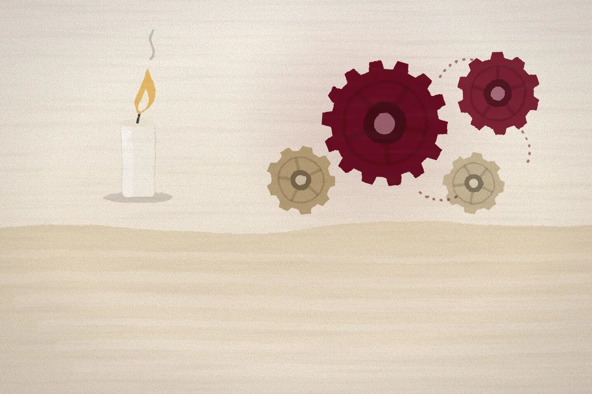
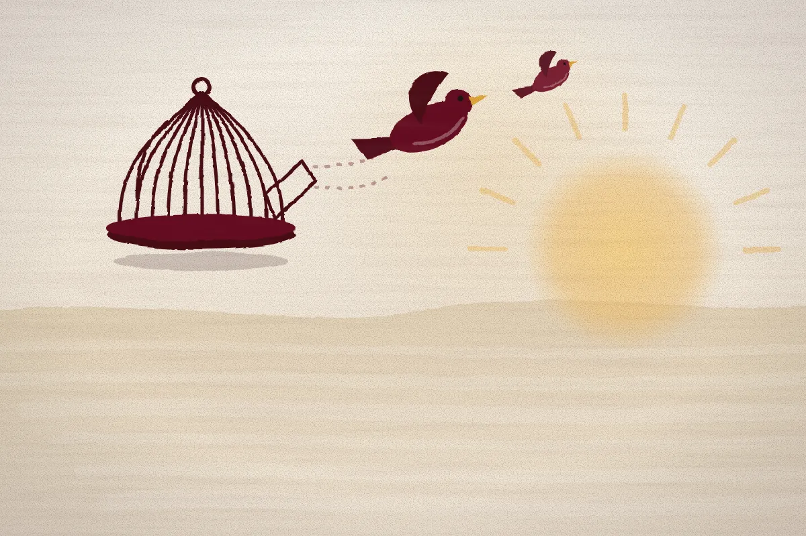

A market decision institution.
Not a conventional trading school. We train through defined roles, disciplined frameworks and institutional thinking.
What it is
A boutique firm for market decision-making.
Whom it serves
Traders with real exposure and inconsistent results.
The problem
Fragmented knowledge and no decision infrastructure.
What markets reward.
Correct participation. Not effort, speed or information.
- Roles
- Processes
- Judgment
Institutions run on these. Ashford brings them to independent traders.
What was missing.

1 2 3 4Information overload
No way to decide what matters.
Hindsight learning
Charts explain themselves afterwards.
Execution gaps
Clear after hours, hard with money at risk.
Borrowed validation
Signals replace independent judgment.
More information was never the missing piece.
How we choose.

Clarity over complexity
A simple process you can run beats a clever one you cannot.

Execution over prediction
The skill is acting well, not forecasting.

Systems over motivation
A process holds when confidence does not.

Independence over dependency
No signal, tip or guru required.
Each choice favours what survives pressure.
Who you become.
Confused trader
Knows concepts, cannot yet act.
Structured thinker
Reads markets through a framework.
Disciplined executor
Acts on defined conditions and risk.
Independent operator
Decides, executes and reviews alone.
Each stage unlocks the next.
Start with the method, or the pathway that fits.
Founded by Bharg Joshi, market practitioner and architect of Ashford’s decision frameworks.